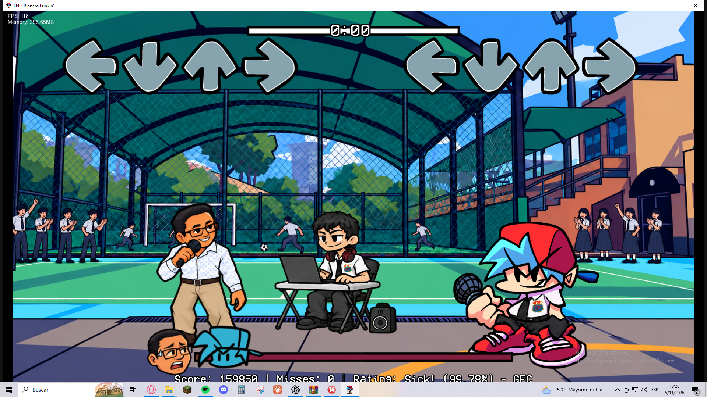
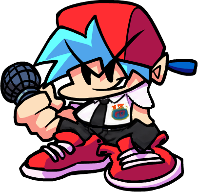

ELIGE TU PLATAFORMA
La versión 0.8.9.6 · Piloto está disponible para Windows. Android está actualizado a 0.8.9.7 e iPhone en la beta 0.8.9.5.
UNA HISTORIA
CON SU PROPIO RITMO
Un mod inspirado en el Colegio Cristiano Pionero, con personajes propios y una canción secreta que cambia de tono la partida.
Android 0.8.9.7 incorpora los retratos actuales, los bip-bop originales de BF y el sonido de letras de Johnny. Trojoni incluye pantalla azul y los nuevos sonidos de fallo y espera, y se encuentra en Juego libre. Windows continúa en 0.8.9.6 e iPhone en la beta 0.8.9.5. La nueva intro y los arreglos musicales de prueba todavía no están integrados.
- Tutorial
- Para andar con Jesús
- Dad loor al Señor
- El color verde / Plateado
- Trojoni
ASÍ SE VE LA BATALLA
Un vistazo al menú, el escenario y los personajes del piloto.




DESCARGA. INSTALA. JUEGA.
Un par de pasos y estás dentro.
EN WINDOWS
- Descarga el archivo ZIP.
- Extrae todo su contenido en una carpeta.
- Abre Pionero Funkin.exe y conserva los archivos juntos.
EN ANDROID
- Descarga y abre el archivo APK.
- Si Android lo solicita, permite la instalación desde la aplicación con la que lo abriste.
- Instala el mod. Si ya lo tienes, elige actualizar.
La beta de iPhone requiere iOS 13.6 o posterior. Para firmar e instalar el IPA, configura AltStore Classic en el iPhone con ayuda de una computadora y abre el IPA desde Mis apps en AltStore. Prueba en iPhone pendiente.